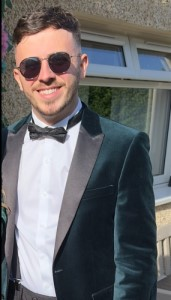

Dean Paget's CV
Contact Me

Professional Summary
Since gaining my degree, I have been an engineer for six years.
Three years as a hardware/software engineer, two years as a software
engineer and a year and a half as a senior software engineer. My
current role uses primarily C programming within its projects and
requires me to see projects to their release whilst being the only software
engineer on the job. Recently I have completed two courses to expand my knowledge
of full stack development and have created many personal projects because of this.
With this, I would like to be able to transfer my current knowledge of software lifecycle
and management and new knowledge to a new role.
Education
BEng Electrical and Electronic Engineering (Hons) - 2017
Heriot Watt, Edinburgh
- My forth year dissertation was ‘technical design and integration of commercial
technologies’ where I designed, built and coded a wearable device that detected
the user gets dangerously close to live distribution lines. I studied IoT
(internet of things), electrical health and safety, and various technologies to
incorporate into my device. SSEN provided the specification for the device. I alone
completed the C++ Programming of the device.
- In third year, I was a member of the project group who won the BP prize for best working
model of a hazardous waste sensor and sorter. My roles were chief public relations
organiser and workshop engineer which included jobs such as:
- Design and build the model (including appropriate material and joining
substance choices).
- Sensor and trapdoor/servo positioning.
- Marketing the finished model.
- Helping with other team members jobs.
- My second year graded unit report looked into powering twenty homes with an
off-grid renewable power source. I gained information on costs, advantages and disadvantages,
lifespan and other factors of a run-of-the-river hydro system and a solar system then compared
them to find the best method of powering 20 homes.
Experience
Senior Software Engineer (2017 - Current)
Software Engineer
Test Equipment Engineer
Leonardo UK, 2 Crewe Road North, Edinburgh, EH5 2XS
- My employment within Leonardo involves me in many different areas of engineering.
For my first three years:
- I worked as part of the test equipment team working along every stage
of the design process for the development of test equipment.
- I carried out hardware, mechanical and software design using C coding
language alongside the creation of the relevant documentation.
- Supporting roles where I helped with the production of Radar systems,
assisting with fault finding sub-assemblies, investigating reoccurring faults
and finding ways to fix these, obsolescence management, assisting with investigating
ways of reducing rework time.
- I then worked as a Software Engineer within the test equipment group for two years.
My work included:
- Coding primarily in C, where I have seen projects through every stage of
the Software project lifecycle.
- Carry out UI design using Labwindows software.
- My main project was the automation of Environmental Stress Screening of
Radar systems. Within this project my software controlled an environmental
chamber through various temperatures whilst communicating with a Radar and
running tests constantly. I was in charge of all software documentation and
the creation of all the software and relevant drivers.
- Now as a Senior Software Engineer:
- I am in charge of software development for six related automated projects.
- I carry out tasks from my previous roles whilst taking more charge of the projects.
- I am able to use my experience in all my positions to my advantage through the
software development process.
- I have worked alongside hardware and firmware engineers and can use my experience
to work with these engineers for better problem solving and creating an advanced
end product.
Other Work Experience
Skills
HTML | CSS | JavaScript | Git | GitHub | Dimensions | React | Node.js | Express
| Python | Flask | Django | SQL | Docker | Kubernetes | OpenShift | Web3 | Dapps
| C/C++ Programming | NI TestStand | LabWindows/CVI
Certifications
- IBM Full Stack Software Developer Course, IBM (on Coursera), 2024
- The Complete 2024 Web Development Bootcamp, Udemy (Dr. Angela Yu), 2024
Personal Projects
The Following projects can be found here:
- Portfolio Webpage - Through my Full Stack course I created a webpage
for a clients work portfolio with HTML, CSS and JavaScript
- React Budget Allocation App – Through my Full Stack course I
created this app with JavaScript using React.
- Node.js and Express App – I assumed the role of a back-end developer to create a
server-side application that stores, retrieves and manages book ratings and reviews.